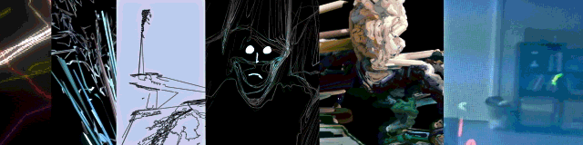

Eyebeam
-
KinectToPin
Record, stream, and export Kinect mocap to After Effects and many other formats.
-
AEwriter
Write After Effects keyframe data from Processing. Outputs a JSX script that generates nulls and keyframes in AE.
-
Drawgrid
Use any image as a map for particles, and decide individual particles' behavior.
-
FaceToPin
Generate AfterEffects keyframes using FaceOSC.
-
Kinect_justrecord
Utility for recording image file of depth map to disk.
-
VoxelPaint
Draw voxels in a volume, export as a pointcloud or as scripts for Maya and After Effects.
-
Lib-Ray
Implementation of the Lib-Ray spec for open HTML5-based HD video collections.
-
DrawVertices
Generate AE project from an OBJ file.
-
SpriteDemo
Simplify using sprites in Processing.
-
Pointcloud_Render
Utility for converting a grayscale depth map to a point cloud or rendered image.
-
PuppetOsc
Puppet experiments driven by OSCeleton-format Kinect skeletons.
-
DragonDouble
Project frame-by-frame over stop-motion animation.
-
LeapToOsc
Output OSC from the Leap Motion controller.